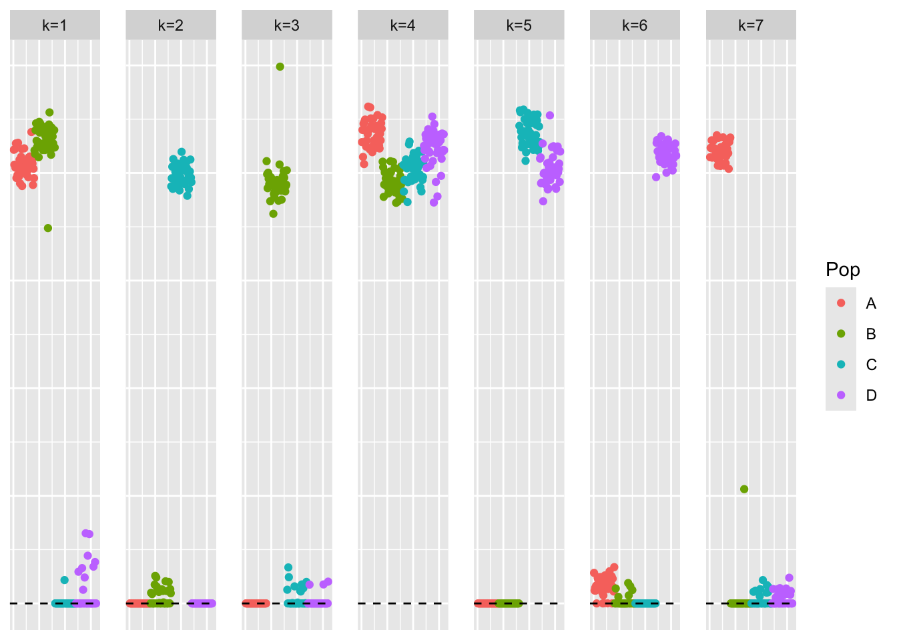
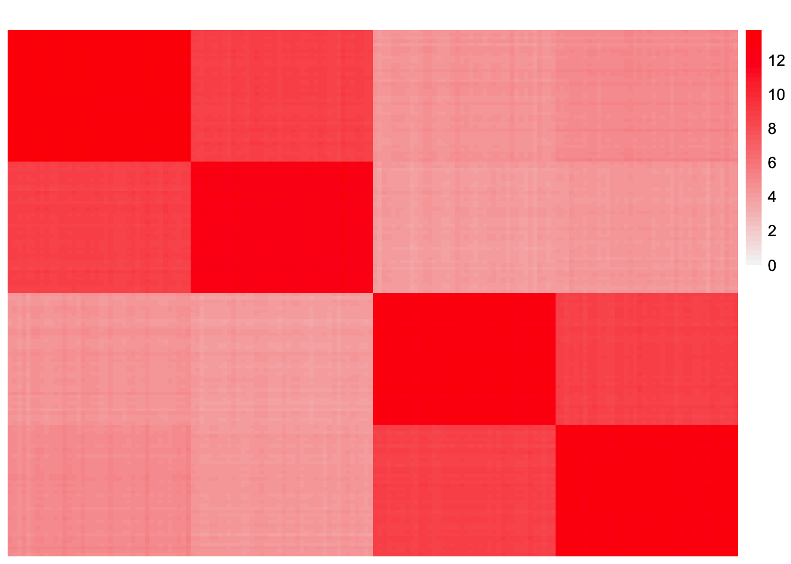
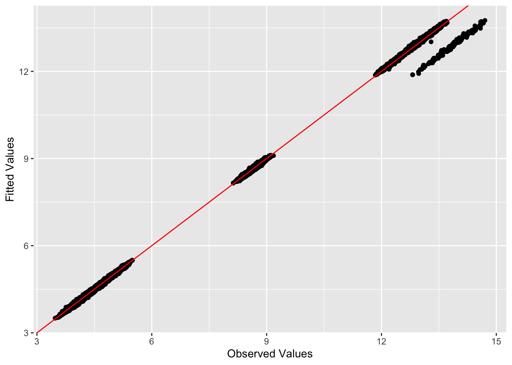
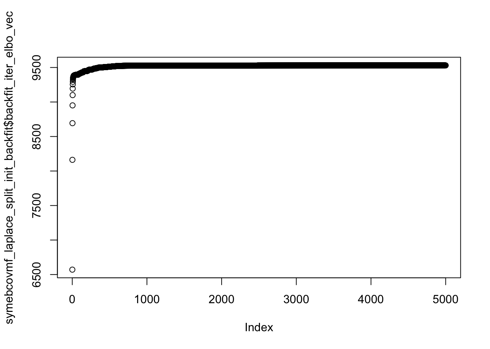

pt_laplace_split_init_symebcovmf_exploration
Annie Xie
2025-11-20
Last updated: 2026-02-06
Checks: 7 0
Knit directory:
symmetric_covariance_decomposition/
This reproducible R Markdown analysis was created with workflowr (version 1.7.2). The Checks tab describes the reproducibility checks that were applied when the results were created. The Past versions tab lists the development history.
Great! Since the R Markdown file has been committed to the Git repository, you know the exact version of the code that produced these results.
Great job! The global environment was empty. Objects defined in the global environment can affect the analysis in your R Markdown file in unknown ways. For reproduciblity it’s best to always run the code in an empty environment.
The command set.seed(20250408) was run prior to running
the code in the R Markdown file. Setting a seed ensures that any results
that rely on randomness, e.g. subsampling or permutations, are
reproducible.
Great job! Recording the operating system, R version, and package versions is critical for reproducibility.
Nice! There were no cached chunks for this analysis, so you can be confident that you successfully produced the results during this run.
Great job! Using relative paths to the files within your workflowr project makes it easier to run your code on other machines.
Great! You are using Git for version control. Tracking code development and connecting the code version to the results is critical for reproducibility.
The results in this page were generated with repository version d581595. See the Past versions tab to see a history of the changes made to the R Markdown and HTML files.
Note that you need to be careful to ensure that all relevant files for
the analysis have been committed to Git prior to generating the results
(you can use wflow_publish or
wflow_git_commit). workflowr only checks the R Markdown
file, but you know if there are other scripts or data files that it
depends on. Below is the status of the Git repository when the results
were generated:
Ignored files:
Ignored: .DS_Store
Ignored: .Rhistory
Ignored: analysis/.DS_Store
Ignored: data/.DS_Store
Note that any generated files, e.g. HTML, png, CSS, etc., are not included in this status report because it is ok for generated content to have uncommitted changes.
These are the previous versions of the repository in which changes were
made to the R Markdown
(analysis/pt_laplace_split_init_symebcovmf_exploration.Rmd)
and HTML
(docs/pt_laplace_split_init_symebcovmf_exploration.html)
files. If you’ve configured a remote Git repository (see
?wflow_git_remote), click on the hyperlinks in the table
below to view the files as they were in that past version.
| File | Version | Author | Date | Message |
|---|---|---|---|---|
| Rmd | d581595 | Annie Xie | 2026-02-06 | Update pt-laplace plus splitting initialization exploration |
| html | ff05aef | Annie Xie | 2025-11-20 | Build site. |
| Rmd | 941f6eb | Annie Xie | 2025-11-20 | Add exploration of symebcovmf backfit with flash pt-laplace plus splitting |
Introduction
In this analysis, I explore the performance of symEBcovMF with the point-laplace plus splitting initialization.
Motivation
The reason I am exploring this initialization is because the GBCD method uses this point-Laplace prior fit plus splitting initialization procedure. This initialization seems to contribute to GBCD’s performance, so I want to see how the procedure performs with symEBcovMF. Since the initialization works well with GBCD, I expect that it will also work well with symEBcovMF. There’s no reason to believe the additional symmetry constraint should affect the performance of the initialization. (Note I am fitting the point-Laplace fit with flashier, not with symEBcovMF. But I imagine the procedure would still work well if you used symEBcovMF to get the point-Laplace prior fit.)
Packages and Functions
devtools::load_all('~/Documents/Github/ebnm')ℹ Loading ebnmWarning: package 'testthat' was built under R version 4.5.2library(pheatmap)
library(ggplot2)Warning: package 'ggplot2' was built under R version 4.5.2library(symebcovmf)
library(flashier)source('code/visualization_functions.R')Data Generation
sim_4pops <- function(args) {
set.seed(args$seed)
n <- sum(args$pop_sizes)
p <- args$n_genes
FF <- matrix(rnorm(7 * p, sd = rep(args$branch_sds, each = p)), ncol = 7)
# if (args$constrain_F) {
# FF_svd <- svd(FF)
# FF <- FF_svd$u
# FF <- t(t(FF) * branch_sds * sqrt(p))
# }
LL <- matrix(0, nrow = n, ncol = 7)
LL[, 1] <- 1
LL[, 2] <- rep(c(1, 1, 0, 0), times = args$pop_sizes)
LL[, 3] <- rep(c(0, 0, 1, 1), times = args$pop_sizes)
LL[, 4] <- rep(c(1, 0, 0, 0), times = args$pop_sizes)
LL[, 5] <- rep(c(0, 1, 0, 0), times = args$pop_sizes)
LL[, 6] <- rep(c(0, 0, 1, 0), times = args$pop_sizes)
LL[, 7] <- rep(c(0, 0, 0, 1), times = args$pop_sizes)
E <- matrix(rnorm(n * p, sd = args$indiv_sd), nrow = n)
Y <- LL %*% t(FF) + E
YYt <- (1/p)*tcrossprod(Y)
return(list(Y = Y, YYt = YYt, LL = LL, FF = FF, K = ncol(LL)))
}sim_args = list(pop_sizes = rep(40, 4), n_genes = 1000, branch_sds = rep(2,7), indiv_sd = 1, seed = 1)
sim_data <- sim_4pops(sim_args)This is a heatmap of the scaled Gram matrix:
plot_heatmap(sim_data$YYt, colors_range = c('blue','gray96','red'), brks = seq(-max(abs(sim_data$YYt)), max(abs(sim_data$YYt)), length.out = 50))
This is a scatter plot of the true loadings matrix:
pop_vec <- c(rep('A', 40), rep('B', 40), rep('C', 40), rep('D', 40))
plot_loadings(sim_data$LL, pop_vec)
Initialization
This is the code for the point-Laplace fit plus splitting initialization procedure:
laplace_split_initialization <- function(S, Kmax, verbose = 2, backfit_maxiter = 500, backfit_tol = NULL){
# backfitting is important in the tree setting
# fit point-laplace fit with flash
flash_laplace_fit <- flash_init(data = S, var_type = 0) |>
flash_set_verbose(verbose = verbose) |>
flash_greedy(Kmax = Kmax, ebnm_fn = ebnm::ebnm_point_laplace) |>
flash_backfit(maxiter = backfit_maxiter, tol = backfit_tol) |>
flash_nullcheck()
# rescale fit so that L and F are of the same scale
flash_laplace_fit_scaled <- ldf(flash_laplace_fit, 'i')
LL <- flash_laplace_fit_scaled$L
##FF <- flash_laplace_fit_scaled$F
# split into positive and negative components
LL <- cbind(pmax(LL, 0), pmax(-LL, 0))
##FF <- cbind(pmax(FF, 0), pmax(-FF, 0))
# remove columns of zeros
idx.nonzero <- apply(LL, 2, function(x){return(sum(x^2))}) > 10^(-10)
LL <- LL[, idx.nonzero]
# refit weights by least squares
n <- nrow(S)
llt_vec <- matrix(rep(0, ncol(LL)*n*n), ncol = ncol(LL))
for (i in 1:ncol(LL)){
llt_vec[,i] <- c(LL[,i]%*%t(LL[,i]))
}
nnlm_fit <- NNLM::nnlm(llt_vec, as.matrix(c(S), ncol = 1), alpha = c(0,0,0))
indices_keep <- (nnlm_fit$coefficients > 0)
LL_scaled <- LL[,indices_keep] %*% diag(sqrt(nnlm_fit$coefficients[indices_keep]))
return(LL_scaled)
}LL_split_init <- laplace_split_initialization(sim_data$YYt, Kmax = 7)Adding factor 1 to flash object...
Optimizing factor...
Factor successfully added. Objective: -69721.325
Adding factor 2 to flash object...
Optimizing factor...
Factor successfully added. Objective: -49567.346
Adding factor 3 to flash object...
Optimizing factor...
Factor successfully added. Objective: -42038.012
Adding factor 4 to flash object...
Optimizing factor...
Factor successfully added. Objective: -20668.510
Adding factor 5 to flash object...
Optimizing factor...
Factor doesn't significantly increase objective and won't be added.
Wrapping up...
Done.
Backfitting 4 factors (tolerance: 3.81e-04)...
Difference between iterations is within 1.0e+04...
Difference between iterations is within 1.0e+03...
Difference between iterations is within 1.0e+02...
Difference between iterations is within 1.0e+01...
Difference between iterations is within 1.0e+00...
Difference between iterations is within 1.0e-01...
Difference between iterations is within 1.0e-02...
Difference between iterations is within 1.0e-03...
Backfit complete. Objective: 18961.444
Wrapping up...
Done.
Nullchecking 4 factors...
No factor can be removed without significantly decreasing the objective.
Done.This is a plot of the initialization:
plot_loadings(LL_split_init, rep(c('A','B','C','D'), each = 40))
| Version | Author | Date |
|---|---|---|
| ff05aef | Annie Xie | 2025-11-20 |
We can see that the initialization contains the components of a tree – there is an intercept components, two branch components, and four population components.
symEBcovMF backfit with point-exponential prior
Now, we backfit with symEBcovMF, initialized with the point-Laplace plus splitting estimate.
First, we initialize a symEBcovMF object using \(\hat{L}_{split}\).
symebcovmf_laplace_split_init_obj <- sym_ebcovmf_init(sim_data$YYt)
split_L_norms <- apply(LL_split_init, 2, function(x){sqrt(sum(x^2))})
idx.keep <- which(split_L_norms > 0)
split_L_normalized <- apply(LL_split_init[,idx.keep], 2, function(x){x/sqrt(sum(x^2))})
init_lambda <- rep(split_L_norms^2, times = 2)[idx.keep]
symebcovmf_laplace_split_init_obj <- sym_ebcovmf_factors_init(sim_data$YYt, symebcovmf_laplace_split_init_obj, split_L_normalized, init_lambda)I refit the lambda values keeping the factors fixed.
# need to check this
symebcovmf_laplace_split_obj <- refit_lambda(S = sim_data$YYt, symebcovmf_laplace_split_init_obj, maxiter = 500)Now, we run the backfit with point-exponential prior.
symebcovmf_laplace_split_init_backfit <- sym_ebcovmf_backfit(sim_data$YYt, symebcovmf_laplace_split_obj, ebnm_fn = ebnm::ebnm_point_exponential, backfit_maxiter = 5000)This is a plot of the estimate from the backfit initialized with the split estimate, \(\hat{L}_{split-backfit}\).
plot_loadings(symebcovmf_laplace_split_init_backfit$L_pm %*% diag(sqrt(symebcovmf_laplace_split_init_backfit$lambda)), rep(c('A','B','C','D'), each = 40))
The final estimate looks like a tree. The factors could be more sparse, but overall, the components correspond to the components of a tree.
This is a heatmap of the estimated Gram matrix, \(\hat{L}_{split-backfit}\hat{\Lambda}\hat{L}_{split-backfit}'\).
gram_est <- tcrossprod(symebcovmf_laplace_split_init_backfit$L_pm %*% diag(sqrt(symebcovmf_laplace_split_init_backfit$lambda)))
plot_heatmap(gram_est, brks = seq(0, max(abs(gram_est)), length.out = 50))
This is the L2 norm of the difference, excluding diagonal entries.
compute_L2_fit <- function(est, dat){
score <- sum((dat - est)^2) - sum((diag(dat) - diag(est))^2)
return(score)
}
compute_L2_fit(gram_est, sim_data$YYt)[1] 31.39017This is a plot of fitted vs. observed values:
ggplot(data = NULL, aes(x = as.vector(sim_data$YYt), y = as.vector(gram_est))) + geom_point() + geom_abline(slope = 1, intercept = 0, color = 'red') + xlab('Observed Values') + ylab('Fitted Values')
| Version | Author | Date |
|---|---|---|
| ff05aef | Annie Xie | 2025-11-20 |
This is a plot of the ELBO:
plot(symebcovmf_laplace_split_init_backfit$backfit_iter_elbo_vec)
| Version | Author | Date |
|---|---|---|
| ff05aef | Annie Xie | 2025-11-20 |
Overall, in this balanced tree setting, symEBcovMF seems to perform well with the point-Laplace plus splitting initialization.
sessionInfo()R version 4.5.1 (2025-06-13)
Platform: aarch64-apple-darwin20
Running under: macOS Sequoia 15.7.3
Matrix products: default
BLAS: /Library/Frameworks/R.framework/Versions/4.5-arm64/Resources/lib/libRblas.0.dylib
LAPACK: /Library/Frameworks/R.framework/Versions/4.5-arm64/Resources/lib/libRlapack.dylib; LAPACK version 3.12.1
locale:
[1] en_US.UTF-8/en_US.UTF-8/en_US.UTF-8/C/en_US.UTF-8/en_US.UTF-8
time zone: America/Chicago
tzcode source: internal
attached base packages:
[1] stats graphics grDevices utils datasets methods base
other attached packages:
[1] flashier_1.0.56 symebcovmf_0.0.0.9000 ggplot2_4.0.1
[4] pheatmap_1.0.13 ebnm_1.1-42 testthat_3.3.1
[7] workflowr_1.7.2
loaded via a namespace (and not attached):
[1] pbapply_1.7-4 remotes_2.5.0 rlang_1.1.6
[4] magrittr_2.0.4 git2r_0.36.2 otel_0.2.0
[7] compiler_4.5.1 getPass_0.2-4 callr_3.7.6
[10] vctrs_0.6.5 reshape2_1.4.5 quadprog_1.5-8
[13] stringr_1.6.0 pkgconfig_2.0.3 crayon_1.5.3
[16] fastmap_1.2.0 ellipsis_0.3.2 labeling_0.4.3
[19] promises_1.5.0 rmarkdown_2.30 sessioninfo_1.2.3
[22] ps_1.9.1 purrr_1.2.0 xfun_0.54
[25] cachem_1.1.0 trust_0.1-8 jsonlite_2.0.0
[28] progress_1.2.3 later_1.4.4 irlba_2.3.5.1
[31] parallel_4.5.1 prettyunits_1.2.0 R6_2.6.1
[34] bslib_0.9.0 stringi_1.8.7 RColorBrewer_1.1-3
[37] SQUAREM_2021.1 pkgload_1.4.1 brio_1.1.5
[40] jquerylib_0.1.4 Rcpp_1.1.0 knitr_1.50
[43] usethis_3.2.1 httpuv_1.6.16 Matrix_1.7-4
[46] splines_4.5.1 tidyselect_1.2.1 rstudioapi_0.17.1
[49] yaml_2.3.12 processx_3.8.6 pkgbuild_1.4.8
[52] lattice_0.22-7 tibble_3.3.0 plyr_1.8.9
[55] withr_3.0.2 S7_0.2.1 evaluate_1.0.5
[58] Rtsne_0.17 desc_1.4.3 RcppParallel_5.1.11-1
[61] pillar_1.11.1 whisker_0.4.1 softImpute_1.4-3
[64] plotly_4.11.0 generics_0.1.4 rprojroot_2.1.1
[67] invgamma_1.2 truncnorm_1.0-9 hms_1.1.4
[70] scales_1.4.0 ashr_2.2-67 gtools_3.9.5
[73] RhpcBLASctl_0.23-42 glue_1.8.0 scatterplot3d_0.3-44
[76] lazyeval_0.2.2 tools_4.5.1 data.table_1.17.8
[79] fs_1.6.6 cowplot_1.2.0 grid_4.5.1
[82] tidyr_1.3.1 devtools_2.4.6 colorspace_2.1-2
[85] NNLM_0.4.4 deconvolveR_1.2-1 cli_3.6.5
[88] Polychrome_1.5.4 mixsqp_0.3-54 viridisLite_0.4.2
[91] dplyr_1.1.4 uwot_0.2.4 gtable_0.3.6
[94] fastTopics_0.7-30 sass_0.4.10 digest_0.6.39
[97] ggrepel_0.9.6 htmlwidgets_1.6.4 farver_2.1.2
[100] memoise_2.0.1 htmltools_0.5.9 lifecycle_1.0.4
[103] httr_1.4.7